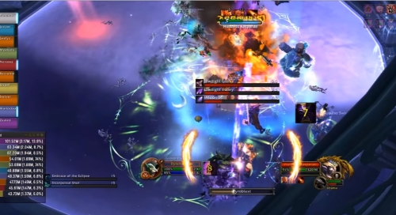
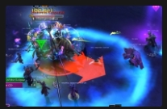
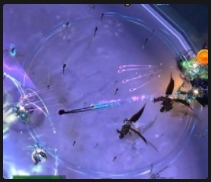
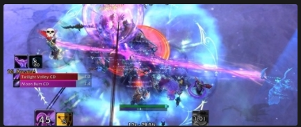
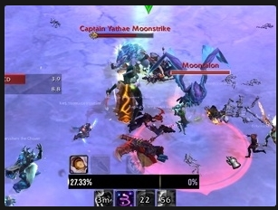
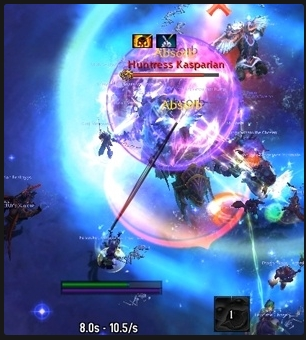
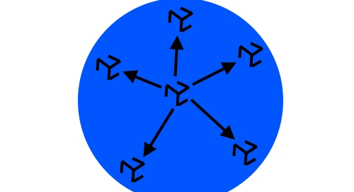

Soeurs de la lune
Cinquième boss du raid, 3 phases, 1 seul boss actif à chaque phase, les 2 autres lancent quand même des techniques.
En P1 (100->70%) : Chasseresse Kasparianne.
En P2 (70->30%) : Capitaine Yathe Heurtelune + Serre-de-lune.
En P3 (30->0%) : Prêtresse Pyroluna.
Les joueurs doivent régulièrement passer du côté clair/obscur pour enlever leurs stacks.
Quand la salle est entièrement claire/obscure, un des boss lance une technique plus puissante.
Méchanique spéciale : Fonts d'Elune.
Le sol de la salle va constamment évoluer, en suivant une évolution lunaire (Nouvelle lune, quart de lune, ..., Pleine lune, etc.)
Tant que le joueur reste du côté clair de la lune, il reçoit un débuff qui se stack, Suffusion lunaire, qui augmente les dégâts d'Arcane reçus de 3% par stack.
Tant que le joueur reste du côté obscur de la lune, il reçoit un débuff qui se stack, Suffusion ombreuse, qui augmente les dégâts d'Ombre reçus de 3% par stack.
Si le joueur change de côté de la lune (même s'il ne bouge pas ça peut être le sol qui avance), il va proc une Purge Astrale, ce qui va lui infliger des dégâts, et augmenter les dégâts de la prochaine Purge Astrale de 50% pendant quelques secondes.
Le but n'est donc pas de changer de côté sans cesse, mais seulement quand certaines techniques le demandent.
Lorsque le sol est complètement recouvert par le côté clair ou obscur, les boss vont utiliser une technique puissante en fonction de la phase.

Au début du fight, c'est la Chasseresse Krasparianne qui est gérée, les deux autres soeurs sont inciblables.
Première technique (P1) : Glaive lunaire.
Lance un glaive sur le tank actuel, qui inflige de dégâts à la première cible et rebondit sur 2 cibles supplémentaires.
Le tank doit utiliser un CD pour diminuer les dégâts encaissés.
Le glaive laisse un débuff qui réduit les soins de 75%, les tanks doivent donc s'échanger le boss après cela, et le tank qui a le débuff doit s'il le peut changer de côté de la lune pour enlever le débuff.
Deuxième technique (P1, P2, P3) : Glaive du crépuscule.
Vise un joueur et place une grosse flèche partant du boss pour identifier où le glaive va partir.
Le glaive inflige des dégâts d'Ombre à tous les personnages sur la trajectoire, les joueurs non-visés doivent donc s'écarter.
Si le joueur visé à beaucoup de stacks de Suffusion Ombreuse, il doit utiliser un CD défensif pour encaisser.

Troisième technique (P1, P2, P3) : Frappe lunaire & brûlure lunaire.
La Prêtresse Pyroluna va attaquer des joueurs avec sa Frappe Lunaire, ce qui inflige des dégâts d'arcane.
La Prêtresse va également placer des Brûlures Lunaires sur des joueurs, qui est un DOT d'Arcane qui dure 2 minutes 30.
Les joueurs qui reçoivent ce DOT doivent essayer de proc un purge astrale en changeant de côté de la lune, pour faire disparaître le débuff.
Si des joueurs sont trop haut en stacks de Suffusion Lunaire, ils vont prendre des dégâts considérables.
Quatrième technique (P1, P2, P3) : Tir de l'Ombre et Salve du Crépuscule.
La Capitaine Yathe Heurtelune va attaquer des joueurs au hasard avec Tir de l'Ombre, infligeant des dégâts... d'Ombre (askip !).
La Capitaine va également placer lancer des Salve du Crépuscule sur un joueur distant, ce qui place une AOE d'Ombre sur sa position.
Les distants doivent donc faire attention à ne jamais être trop prêt du boss pour ne pas faire tomber l'AOE sur la mélée.

Cinquième technique (P1 - Pleine/Nouvelle Lune) : Tir incorporel.
Lorsque la lune est Pleine ou Nouvelle, la Capitaine vise un joueur au hasard avec un rayon. Au bout de 8 secondes, inflige de lourds dégâts répartis entre tous les joueurs sur la trajectoire du rayon.
Le joueur visé doit donc se placer au milieu de la pièce, et les autres joueurs se mettent sur la trajectoire.
Si le raid a beaucoup de stacks de Suffusion Ombreuse, un CD heal défensif sera nécessaire.

A 70% de PV, la Chasseresse se retire et c'est la Capitaine Yathe Heurtelune qui prend sa place.
La Chasseresse va quand même utiliser Glaive du crépuscule en se téléportant partout dans la salle, les joueurs doivent donc faire attention à son positionnement pour pouvoir éviter le glaive.
La Capitaine garde sa technique Salve du crépuscule.
La Prêtresse garde ses techniques Frappe lunaire & brûlure lunaire.
Première technique (P2, P3) : Tir accéléré et Appel de Serre-de-Lune.
La Capitaine Yathe Heurtelune remplace son Tir de l'Ombre par un Tir Accéléré, qui au lieu de faire des dégâts directs va infliger un DOT. Le joueur touché doit essayer de proc la Purge Astrale pour supprimer sa Suffusion Ombreuse.
La Capitaine va surtout appeler Serre-de-Lune, ce qui invoque un add. Cet add doit être tanké et lance des Hurlement Mortel en-dessous de 25% PV, qui infligent des dégâts de raid.
Les dégâts augmentent de 25% à chaque cri. Cet add est donc la priorité des DPS.

Deuxième technique (P2, P3) : Glaive Spectral.
La Chasseresse va lancer un glaive rebondissant comme en P1, mais celui-ci ne visera pas forcément le tank.
Les ranges doivent être espacés les uns des autres pour essayer d'empêcher les rebonds du glaive.
Troisième technique (P2 - Pleine/Nouvelle Lune) : Etreinte de l'éclipse.
Lorsque la lune est Pleine ou Nouvelle, la Prêtresse va placer un énorme bouclier d'absorption de dégâts sur la Capitaine, et des shiels d'absorption de heal sur tous les joueurs.
Tous les shields doivent être cassés en moins de 12 secondes, en utilisant des CDs de DPS et des CDs de Heal !
Si les Heals n'arrivent pas à casser les shields d'absorb, les joueurs doivent s'espacer de 8 mètres les uns des autres pour ne pas prendre de dégâts. Les dégâts du shield sur le boss ne peuvent pas être esquivés.

Première technique (P3) : Feu de la lune.
La Prêtresse remplace sa technique Frappe Lunaire par Feu de la Lune, qui est un DOT sur le tank actuel.
Les tanks doivent donc s'échanger le boss quand ils ont ce DOT.
Deuxième technique (P3) : Balise Lunaire.
La Prêtresse va également placer des débuffs sur des joueurs, leur infligeant de légers dégâts des arcanes pendant 6 secondes.
A la fin des 6 secondes, la zone où le joueur se trouve est bombardée de dégâts d'arcane et les joueurs présents dans la zone sont silence.
Les joueurs qui reçoivent le débuff doivent donc s'écarter du raid.
Troisième technique (P3 - Pleine/Nouvelle Lune) : Profusion de glaives.
Lorsque la lune est Pleine ou Nouvelle, la Chasseresse va lancer un énorme glaive au centre de la salle.
Le glaive va alors se diviser en plusieurs glaives qui vont se diriger vers les bords de la salle en infligeant des dégâts.
Il est donc important d'éviter le centre de la salle lors de la P3.

Mode Héroïque
(P1, 2, 3) :
Techniques doublées.

En mode de difficulté héroïque, au lieu d'une technique puissante à chaque phase, les joueurs devront faire face à deux d'entre elles.
En P1, en plus de Tir Incorporel, il faudra gérer l'Etreinte de l'éclipse.
En P2, en plus de l'Etreinte de l'éclipse, il faudra gérer la Profusion de glaives.
En P3, en plus de la Profusion de glaives, il faudra gérer le Tir Incorporel.